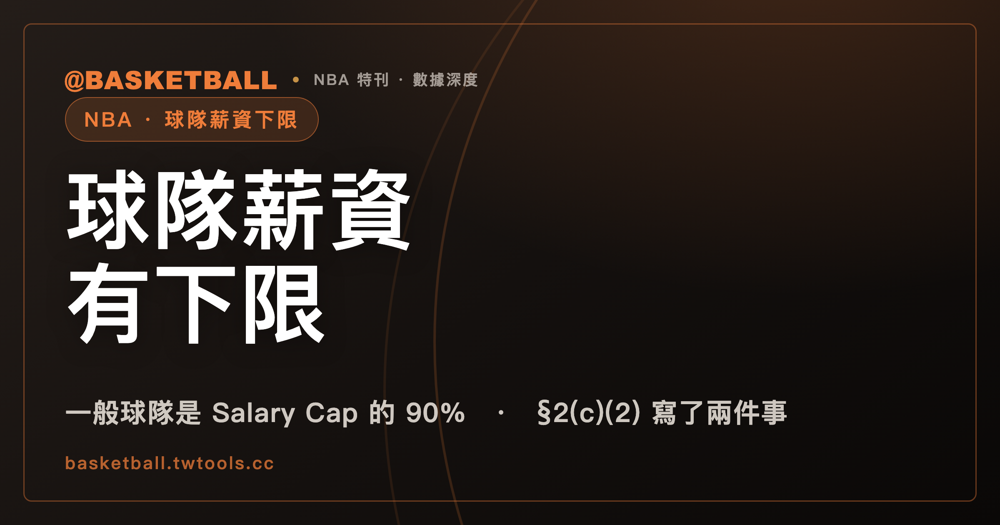

NBA 球隊薪資有下限：2023 CBA 把一般球隊的 Minimum Team Salary 定在 Salary Cap 的 90%
依 2023 NBA CBA Article VII §2(a)(4)(i)，一般球隊的 Minimum Team Salary 等於該 Salary Cap Year 的 Salary Cap 的 90%（擴張球隊前兩個 Salary Cap Year 另有基準）。某隊的 MTS Payment Team Salary 低於它時，§2(c)(2) 寫了付款給 NBA 與不得分得部分稅款兩件事。

新手村｜制度入門・球隊薪資下限
本文依據 2023 年 6 月版的 NBA 集體勞動協議（下稱 2023 NBA CBA），全文取得日為 2026 年 9 月 30 日。CBA 會隨協議修訂，之後以官方最新版為準。
談 NBA 薪資時，薪資帽（Salary Cap）、稅線（Tax Level）、apron 這幾條線管的是薪水偏高的一端。同一份 CBA 對薪水偏低的一端也有條文。2023 NBA CBA 的 Article VII 第 2 節標題，就把 Minimum Team Salary 與 Salary Cap、Tax Level、Apron Levels、Draft Pick Penalty 並列。
三條高線各管什麼，已經寫在本站的球隊薪資能超過薪資帽。那篇談的是薪資帽、稅線與 apron。本文接著看偏低的一端。
本文主張一件事：依 2023 NBA CBA，一般球隊的 Minimum Team Salary 是 Salary Cap 的 90%；某隊某個 Salary Cap Year 的 MTS Payment Team Salary 低於它時，§2(c)(2) 明列兩件事。讀完之後，你可以自己判一個標明「假設」的情境：算出下限是多少、差額是多少、§2(c)(2) 的兩件事各自會不會出現。
「球隊薪資下限」是中文慣稱，不是 CBA 用語。CBA 的用字是 Minimum Team Salary，本文寫英文原文。本文只用比例，沒有美元金額，也不談任何特定球隊的薪資狀況。
2023 NBA CBA 把一般球隊的 Minimum Team Salary 定在 Salary Cap 的 90%
2023 NBA CBA Article I 的定義款寫得直白：Minimum Team Salary 是一支球隊在一個 Salary Cap Year 必須具有的 Team Salary 下限，決定方式依 Article VII。
數字在 Article VII §2(a)(4)(i)：協議涵蓋的每個 Salary Cap Year，都有一個等於該 Salary Cap Year 的 Salary Cap 的 90% 的 Minimum Team Salary。原文是 "a Minimum Team Salary equal to ninety percent (90%) of the Salary Cap for such Salary Cap Year"。
所以下限跟著帽走：帽線是多少，下限就是那個數字的 90%。用一個假設數字看：假設某個 Salary Cap Year 的 Salary Cap 是 100 個單位，一般球隊的 Minimum Team Salary 就是 100 乘 0.9，等於 90 個單位。
這裡的 Team Salary 是 CBA 自己定義的詞。Article I 寫的是：某個 Salary Cap Year 內，歸屬於一支球隊現役與前球員的 Salaries，加上依 Article VII 計算的其他金額，減去依 Article VII 計算的抵減金額。本文照這個定義引用，不把它換成「總薪水」這類說法。
順帶一提查條文時會遇到的一個位置差：Article I 的定義款指向的是 Article VII 的 Section 2(b)，而 90% 的條文位在 §2(a)(4)(i)。兩處位置不同是文本事實；本文的數字取自 §2(a)(4)(i) 這一款本身，不對指向另作解讀。
| 詞 | 2023 NBA CBA 出處 | 內容 |
|---|---|---|
| Minimum Team Salary | Article I 定義款 | 球隊在一個 Salary Cap Year 必須具有的 Team Salary 下限 |
| 一般球隊的 90% | Article VII §2(a)(4)(i) | 等於該 Salary Cap Year 的 Salary Cap 的 90% |
| Team Salary | Article I 定義款 | 現役與前球員的 Salaries 加其他金額，減抵減金額，均依 Article VII 計算 |
擴張球隊前兩個 Salary Cap Year，90% 乘的是縮小後的帽
Article VII §2(g) 先寫明：擴張球隊（Expansion Team）與其他球隊有相同的 Salary Cap 與 Minimum Team Salary，除了下面兩種情形。
第一種，§2(g)(1)：擴張球隊開打的第一個 Salary Cap Year，Salary Cap 是依 §2(a) 算出的帽的 66-2/3%，協議稱為 First Year Expansion Team Salary Cap；它的 Minimum Team Salary 是這個縮小後的帽的 90%。
第二種，§2(g)(2)：開打後緊接的第二個 Salary Cap Year，Salary Cap 是依 §2(a) 算出的帽的 80%，稱為 Second Year Expansion Team Salary Cap；Minimum Team Salary 同樣是它的 90%。
用假設數字算一次。假設依 §2(a) 算出的帽是 100 個單位：
- 第一個 Salary Cap Year：100 乘 2/3 得到約 66.67，再乘 0.9，等於 60 個單位。
- 第二個 Salary Cap Year：100 乘 0.8 得到 80，再乘 0.9，等於 72 個單位。
兩個 90% 是同一個比例，乘的基準不同。所以本文標題與主張裡的「Salary Cap 的 90%」限定在一般球隊；擴張球隊的前兩個 Salary Cap Year 照 §2(g) 另算。
§2(c)(2) 拿來和下限比的詞是 MTS Payment Team Salary
球隊薪水低於下限之後會怎樣，寫在 Article VII §2(c)「Operation of Minimum Team Salary」。這一款第一個要認的詞是 MTS Payment Team Salary。
§2(c)(1)(ii) 的定義首句是："MTS Payment Team Salary" means, for a Team for a Salary Cap Year, the Team's MTS Cap Hold Team Salary as of the start of the first day of the Regular Season occurring within such Salary Cap Year。意思是：以該隊的 MTS Cap Hold Team Salary 在該 Salary Cap Year 常規賽第一天開始時的數字為底。
定義接著列了三項加減，分別對應 Section 4(h)、Section 3(e)、Section 4(b) 所列的 Salary，寫法是加、減、加。MTS Cap Hold Team Salary 與另一個詞 MTS Threshold 的算法，本文不展開。
要記的重點是：§2(c)(2) 的付款條件比的是 MTS Payment Team Salary 與 Minimum Team Salary。看到「某隊低於下限」這種說法時，回到條文，條文寫的比較對象是 MTS Payment Team Salary。
MTS Payment Team Salary 低於 Minimum Team Salary 時，§2(c)(2) 寫了兩件事
§2(c)(2) 的條件句是：某隊某個 Salary Cap Year 的 MTS Payment Team Salary，低於該 Salary Cap Year 適用的 Minimum Team Salary。條件成立時，條文列了兩款。
第一件，§2(c)(2)(i)：NBA 要促使該隊向 NBA 付一筆款項，金額等於該隊的 MTS Payment Team Salary 與 Minimum Team Salary 之間的差額。
第二件，§2(c)(2)(ii)：該隊被禁止分得 NBA 選擇分配給非繳稅球隊的稅款份額（針對該 Salary Cap Year，依 §2(d)(4)(i)）。這一款開頭是 "Subject to Section 2(c)(7) below"，所以要連同 §2(c)(7) 一起讀。
§2(c)(7) 是這一款的例外，而且是賽季限定：它只針對 2023-24 Salary Cap Year。該 Salary Cap Year 內，若某隊的 MTS Payment Team Salary 低於 Minimum Team Salary，且該隊當年不欠稅（does not owe a Tax），這隊有權得到 NBA 選擇分配給非繳稅球隊的稅款的 50% 份額。2023-24 Salary Cap Year 已經過去，本文把它當作過去的規定，2023-24 之後的 Salary Cap Year 不適用這個 50% 例外。
CBA 在這裡用的字是 payment（付款），本文跟著稱為「款項」。§2(c) 各款描述 MTS 相關付款時，沒有用 fine 或 penalty 這兩個字。
Salary Cap Year 結束時可能再付一筆：§2(c)(5) 的補付款與 §2(c)(6) 的期限
除了 §2(c)(2)(i) 的款項，2023 NBA CBA 在 Salary Cap Year 的末日還有一次檢查，寫在 §2(c)(5)。
條件是：截至該 Salary Cap Year 末日結束時，Minimum Team Salary 超過兩項的加總，這兩項是該隊負財務責任的那部分 MTS Cap Hold Team Salaries 的總額，以及該隊依 §2(c)(2)(i) 須付的款項。條件成立時，在 §2(c)(2)(i) 的款項之外，該隊再付一筆給 NBA，金額等於這個超出額。本文只寫該款首句的條件，款內其餘的計算補充不展開。
付款期限與去向在 §2(c)(6)。依 §2(c)(2)(i) 或 §2(c)(5) 應付的款項，球隊要在該 Salary Cap Year 的 Governing Audit Report 完成後十個營業日內付給 NBA；NBA 收到款項後，再於十個營業日內把這些款項平均分配給各 Team。
兩筆款項各在各的款次：§2(c)(2)(i) 一筆、§2(c)(5) 一筆，§2(c)(6) 管的是這兩筆的付款時間與分配方式。本文不把它們合成一個數字。
§2(c)(3) 與 §2(c)(4) 是各自帶公式的獨立款次
§2(c) 底下另有兩款，容易與付款款次混在一起讀，它們各有自己的文字。
§2(c)(3) 從常規賽第一天開始起，一路到涵蓋該常規賽的 Salary Cap Year 結束，規定球隊的 Team Salary 要計入一筆金額（若有），金額由 Minimum Team Salary 與兩個 MTS Cap Hold Team Salary 的數字決定。Article VII §4(a)(8) 列 Team Salary 的計入項目時，也有一項指向 §2(c)(3)：依 Minimum Team Salary 規則計入的金額（若有）。
§2(c)(4) 針對常規賽期間某日 MTS Cap Hold Team Salary 降到低於 MTS Threshold 的情形，訂了補回的期限。
這兩款各有算式與觸發條件，本文不展開，也不把它們寫成 §2(c)(2) 付款的一部分。下表把 §2(c) 各款放在一起，方便對照。
| 款次（2023 NBA CBA Article VII） | 寫了什麼 | 適用範圍 |
|---|---|---|
| §2(c)(2)(i) | 付給 NBA 的款項，等於 MTS Payment Team Salary 與 Minimum Team Salary 的差額 | MTS Payment Team Salary 低於適用的 Minimum Team Salary 時 |
| §2(c)(2)(ii) | 不得分得 NBA 選擇分配給非繳稅球隊的稅款 | 同上；開頭附 §2(c)(7) 的但書 |
| §2(c)(3) | 常規賽起計入 Team Salary 的一筆金額 | 獨立款次，有自己的算式 |
| §2(c)(4) | MTS Threshold 的補回期限 | 獨立款次，常規賽期間某日條件成立時 |
| §2(c)(5) | Salary Cap Year 末日的補付款 | 末日檢查的條件成立時，另計於 §2(c)(2)(i) 之外 |
| §2(c)(6) | 付款期限與分配 | 針對 §2(c)(2)(i) 與 §2(c)(5) 的款項 |
| §2(c)(7) | 稅款分配的 50% 份額例外 | 僅 2023-24 Salary Cap Year，已過去 |
| §2(c)(8) | 不排除 Team Salary 高於 Minimum Team Salary | 前提見下一節 |
協議不排除 Team Salary 高於 Minimum Team Salary，前提是不超過帽線加例外額度
§2(c)(8) 的原文是 "Nothing contained herein shall preclude a Team from having a Team Salary in excess of the Minimum Team Salary"，後面接著一個前提：該隊的 Team Salary 不超過 Salary Cap，加上 Article VII 所列各 Exceptions 授權的額外金額。
白話說：下限是往低的一端劃線，這一款講的是高於下限的球隊沒有因此被協議排除，只要沒有超過帽線加例外額度。例外條款怎麼讓球隊薪資高過帽線，可以回頭看球隊薪資能超過薪資帽，其中談例外條款的那一段。
練習：假設帽是 100 個單位，四支假設球隊各碰到什麼？
下面全是假設。假設 Salary Cap Year 是 2023-24 之後的某一年，依 §2(a) 算出的 Salary Cap 是 100 個單位；下表的四支球隊是虛構的，數字也是假設，條文依 2023 NBA CBA。
先做兩個共同的動作：一般球隊的 Minimum Team Salary 是 100 乘 0.9，等於 90 個單位；擴張球隊第一個 Salary Cap Year 的是 100 乘 2/3 乘 0.9，等於 60 個單位。
| 假設球隊 | 類型 | 假設的 MTS Payment Team Salary | 適用的 Minimum Team Salary |
|---|---|---|---|
| 甲隊 | 一般球隊 | 82 | 90 |
| 乙隊 | 一般球隊 | 90 | 90 |
| 丙隊 | 擴張球隊，開打的第一個 Salary Cap Year | 55 | 60 |
| 丁隊 | 一般球隊 | 96 | 90 |
逐隊判斷：
- 甲隊：82 低於 90，§2(c)(2) 的條件成立。§2(c)(2)(i)：付給 NBA 的款項是 90 減 82，等於 8 個單位。§2(c)(2)(ii)：這假設年度在 2023-24 之後，§2(c)(7) 的 50% 例外不適用，甲隊被禁止分得 NBA 選擇分配給非繳稅球隊的稅款。
- 乙隊：90 不低於 90，§2(c)(2) 的條件句不成立，兩件事都不出現。§2(c)(5) 要看 Salary Cap Year 末日的數字，這題沒有給，所以不判。
- 丙隊：擴張球隊第一個 Salary Cap Year 的比較基準是 60，55 低於 60，§2(c)(2)(i) 的款項是 60 減 55，等於 5 個單位。§2(c)(2)(ii) 同甲隊的判法。
- 丁隊：假設它的 Team Salary 也是 96。96 高於 90，96 也沒有超過 100 的帽線，§2(c)(8) 的前提滿足，這樣的薪水沒有被協議排除。
算術重算一次：90 減 82 是 8；60 減 55 是 5；100 乘 2/3 乘 0.9 是 60；100 乘 0.9 是 90。
再自己出一題：換一個假設的帽值，例如 200 個單位，算出一般球隊的下限，再任意假設一個 MTS Payment Team Salary，照上面三步判：①先確認球隊類型與 Salary Cap Year，決定下限的算法；②拿 MTS Payment Team Salary 和下限比；③低於時讀 §2(c)(2) 的兩款，再看有沒有 §2(c)(5) 與 §2(c)(6)。
常見問題
NBA 球隊薪資有下限嗎？是多少？
有。依 2023 NBA CBA Article VII §2(a)(4)(i)，一般球隊在協議涵蓋的每個 Salary Cap Year，都有一個 Minimum Team Salary，等於該 Salary Cap Year 的 Salary Cap 的 90%。擴張球隊是例外：依 §2(g)，開打的第一個 Salary Cap Year 用帽的 66-2/3% 為基準、第二個 Salary Cap Year 用 80%，各自再乘 90%。本文不涵蓋任何特定球隊的薪資狀況，也不列美元金額。
球隊薪水低於下限，會被罰款嗎？
2023 NBA CBA §2(c) 各款描述 MTS 相關付款時用的字是 payment，沒有用 fine 或 penalty。§2(c)(2) 寫的是：某隊某個 Salary Cap Year 的 MTS Payment Team Salary 低於適用的 Minimum Team Salary 時，NBA 要促使該隊付一筆等於差額的款項給 NBA，且（2023-24 Salary Cap Year 限定的 §2(c)(7) 例外之外）該隊不得分得 NBA 選擇分配給非繳稅球隊的稅款。Salary Cap Year 末日另有 §2(c)(5) 的補付款，付款期限與分配見 §2(c)(6)。
球隊薪水可以高於下限嗎？
可以。依 2023 NBA CBA Article VII §2(c)(8)，協議不排除球隊的 Team Salary 高於 Minimum Team Salary；前提是該隊的 Team Salary 不超過 Salary Cap，加上 Article VII 所列各 Exceptions 授權的額外金額。
未達下限的球隊還能分到 NBA 分配給非繳稅球隊的稅款嗎？
依 2023 NBA CBA §2(c)(2)(ii)，MTS Payment Team Salary 低於適用的 Minimum Team Salary 的球隊，被禁止分得 NBA 選擇分配給非繳稅球隊的稅款份額。這一款附有 §2(c)(7) 的但書，例外只限 2023-24 Salary Cap Year：當年 MTS Payment Team Salary 低於 Minimum Team Salary 且當年不欠稅的球隊，可得該稅款分配的 50% 份額。2023-24 之後的 Salary Cap Year 不適用這個例外。
資料來源
- 2023 NBA CBA（NBA 集體勞動協議，2023 年 6 月版，取得日 2026 年 9 月 30 日）：2023 NBA CBA（官方 PDF）
- Article I 定義款：Minimum Team Salary、Team Salary。
- Article VII §2 標題、§2(a)(4)(i)、§2(c)(1)–(8)、§2(g)(1)–(2)、§4(a)(8)。
- 相關站內文章：球隊薪資能超過薪資帽。